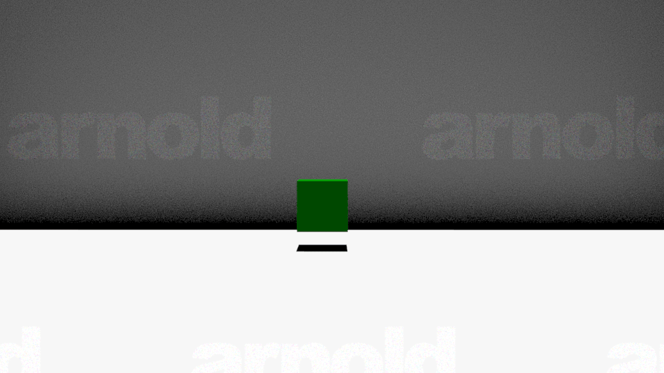
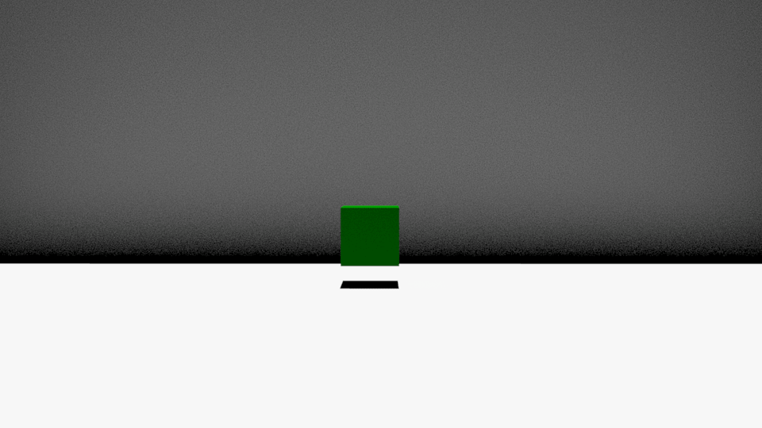

This week was easier than last weeks raytracer which I liked. I was able to think in a 3d space and understand what was going on with the help of my previous maya understandings.
(x-rotation)

(y-rotation)

(z-rotation)
Once we had to code it out in Javascript, that's what lost me and I have to work and improve on. Also this weekend threw me off as I was working on the old version of Matrix3 and didn't
realize there was an update in the files until my partner pointed it out for me. The tuesday lecture also help me understand the latter functions such as orthorgraphic and
perspective.
Also wanted to spend time refreshing my maya animation skills because why not :) !!
realized too late i should've viewed my gifs in a 3d way and angle it normally.
(wish i could do these assignments in maya lol jk it wouldn't be a programming class then)
-great knowing/understading "what's going on under the hood"